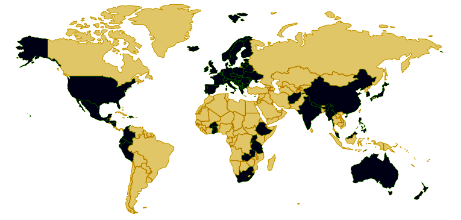

Los filtros utilizan Membranas de Fibras Huecas, una tecnología desarrollada para la diálisis renal. Estas fibras huecas constan de pequeños tubos en formas de “U” que permiten el paso de agua a su interior a través de microporos. Los poros de los filtros PointONE ™ son tan pequeños (0.1 micras absolutas) que no pueden pasar ninguna bacteria (incluyendo las que causan el cólera, la tifoidea y la Escherichia coli), protozoarios o quistes. Este filtro alcanza al mas alto nivel de filtración existente en la actualidad, superando estándares para el agua potable de la Agencia de Protección Ambiental de Los Estados Unidos.

Sobre la misma base tecnologica, se han ensamblado diversos productos para adaptarse a las necesidades especificas de su local:
Agua limpia, filtrada directamente del grifo. Este filtro tiene capacidad de limpiar más de 400.000 de litros.
Incluye:
Especificaciones Tecnicas: 
02 CUOTAS = S/. 158.03
03 CUOTAS = S/. 110.37
Además de ofrecer el mismo nivel de protección contra bacterias y protozoarios que PointONE, el purificador de agua Sawyer Point ZeroTWO, es el primer dispositivo de filtrado potable del mercado que elimina virus de manera totalmente mecánica. Gracias a sus diminutos poros de 0.02 micras elimina virus en una escala de 5.5 log (99.9997%), el mayor nivel de filtrado del mercado.
Incluye:
Especificaciones Tecnicas:
02 CUOTAS = S/. 410.00
03 CUOTAS = S/. 280.00
Agua limpia para su hogar, escuela, piscina, hospital u oficina. Este filtro puede ser utilizado para filtrar 200.000 litros de agua potable diariamente, 138 litros por minuto. Esta unidad es de alta calidad y durabilidad y se puede conectar fácilmente a su tubería interna, eliminando los contaminantes dañinos antes de que llegue a su grifo. NO REQUIERE DE FILTROS O CARTUCHOS DE REPUESTO.
Especificaciones Tecnicas: :
02 CUOTAS = S/. 78.75
03 CUOTAS = S/. 55.00
Los usuarios de Durabio se encuentran mayormente en paises con peor calidad de agua, donde esta no es adecuadamente saneada por plantas purificadoras. Sus filtros estan siendo utilizado en mas de 100 paises. Algunos usuarios notables son:
Los productos Durabio estan siendo usados en mas de 100 paises
